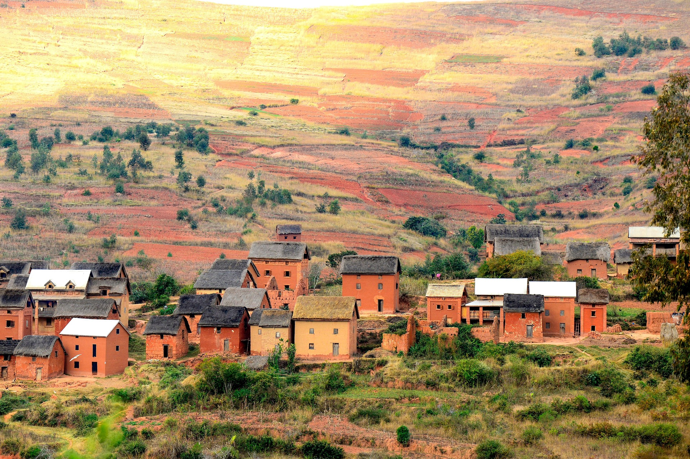
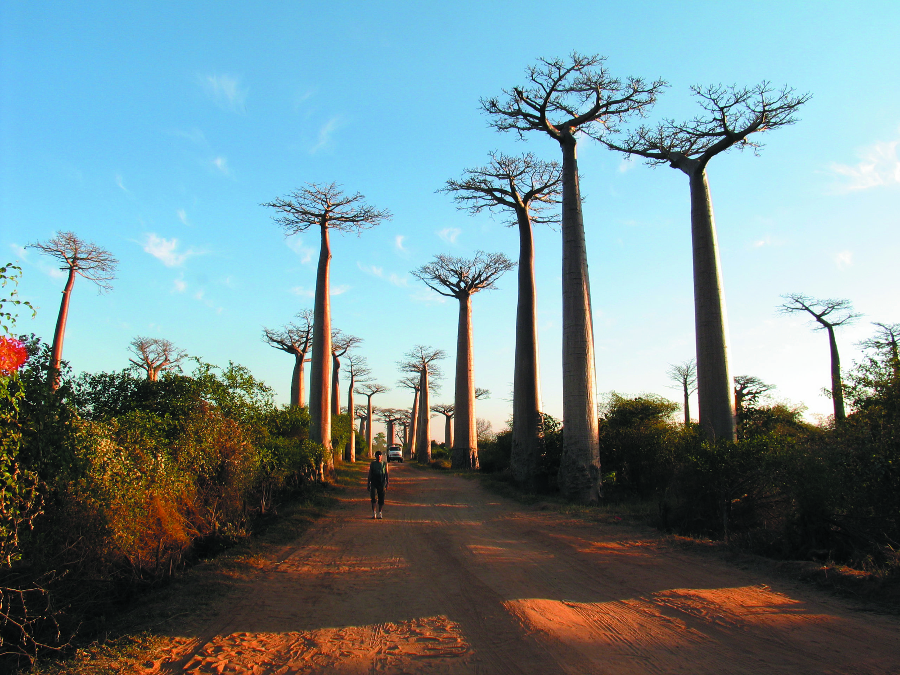
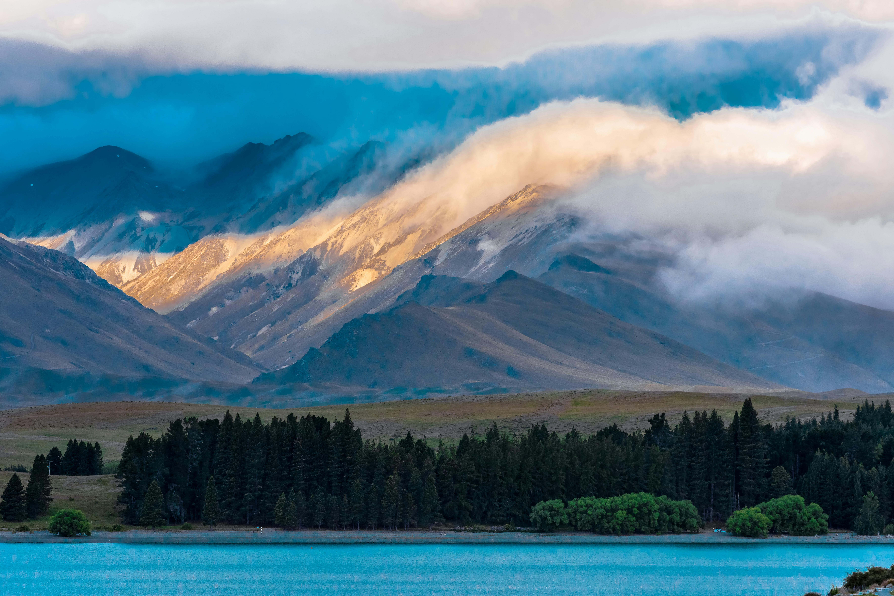

Autochtone tour Madagascar est née de l'amour pour Madagascar. Notre mission est de faire découvrir la Grande Île au-delà des clichés.
Nous vous invitons à vous imprégner de la vie réelle des communautés locales, tout en préservant un patrimoine naturel et culturel unique.
Chaque voyage est conçu pour promouvoir le tourisme de proximité en créant des produits touristiques autochtones.
Notre but ultime : améliorer le niveau de vie de la population locale, acteur majeur du développement humain.
Nous croyons en un tourisme qui respecte la terre et les hommes.
Une transparence totale sur nos tarifs et les réalités du terrain malgache.
Une équipe passionnée, disponible 24/7 pour veiller sur votre confort.
Chaque circuit soutient directement les économies des villages traversés.
Nous ne nous contentons pas de vous montrer Madagascar, nous vous faisons vivre l'île Rouge de l'intérieur.
Nos guides sont nés sur cette terre. Ils partagent avec vous des secrets et des sentiers que seuls les locaux connaissent.
Des véhicules entretenus et une assistance 24/7. Votre tranquillité d'esprit est notre priorité absolue durant tout le circuit.
Nous collaborons directement avec les communautés rurales pour un impact positif et durable sur l'économie locale.
Chaque voyageur est unique. Nous adaptons nos itinéraires selon vos envies, votre rythme et votre budget.

